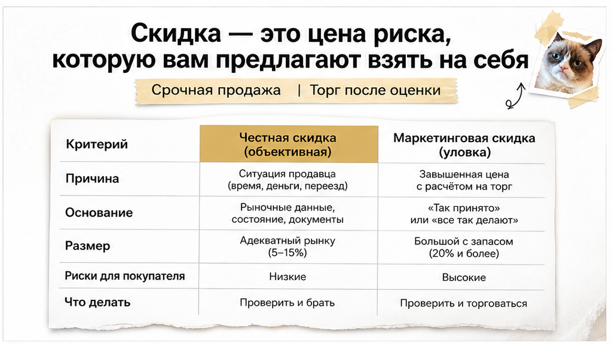
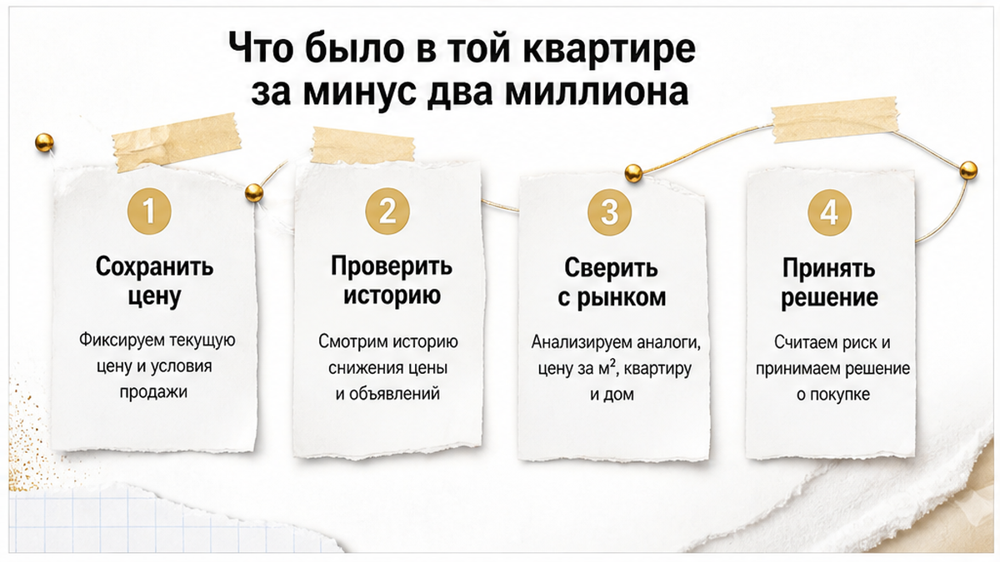
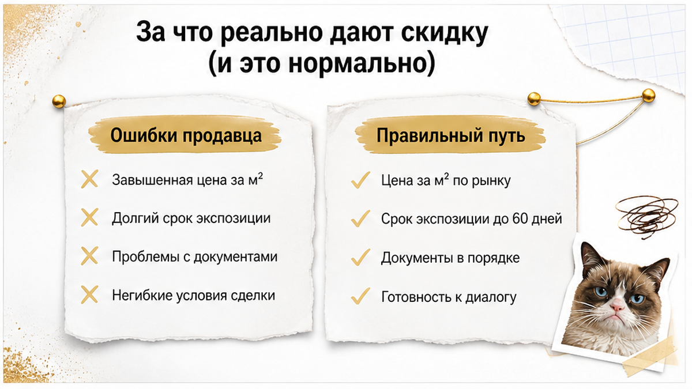
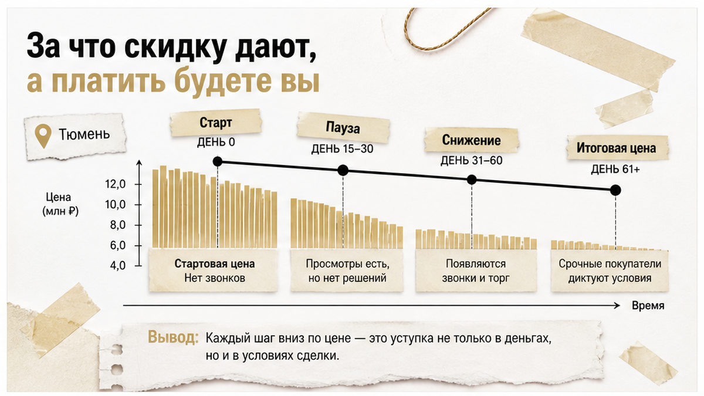
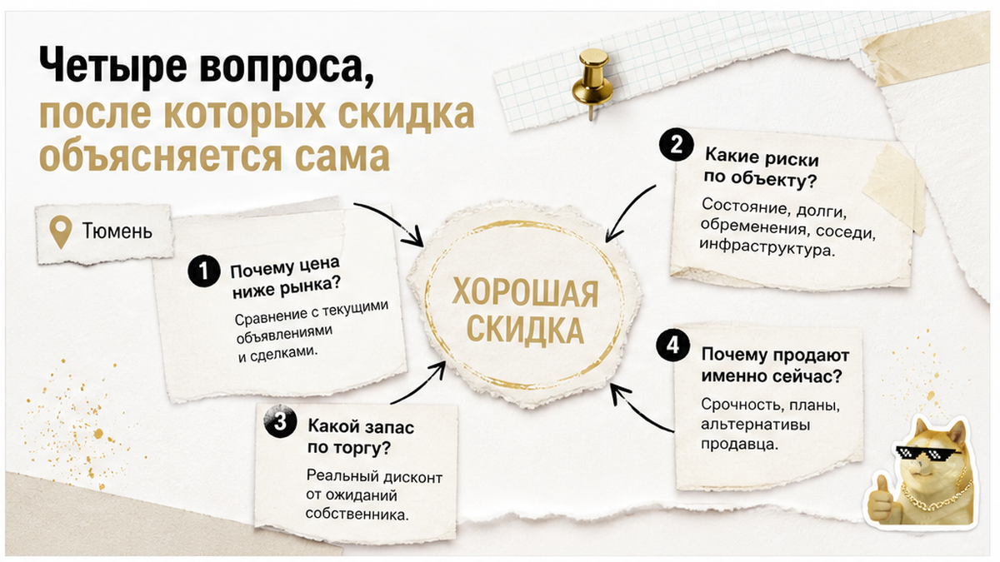
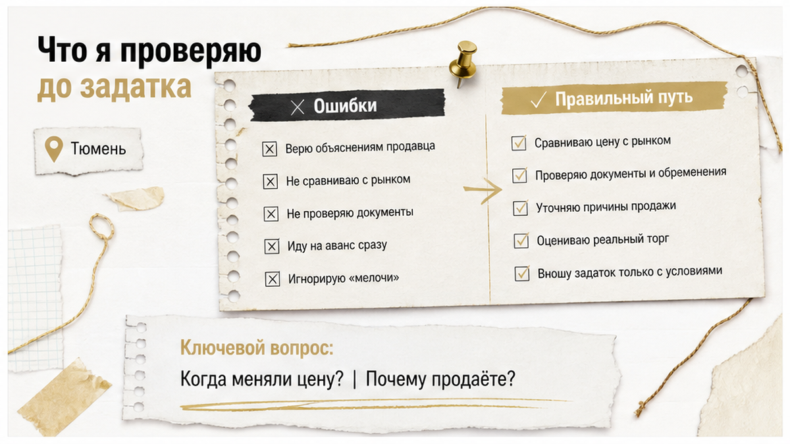
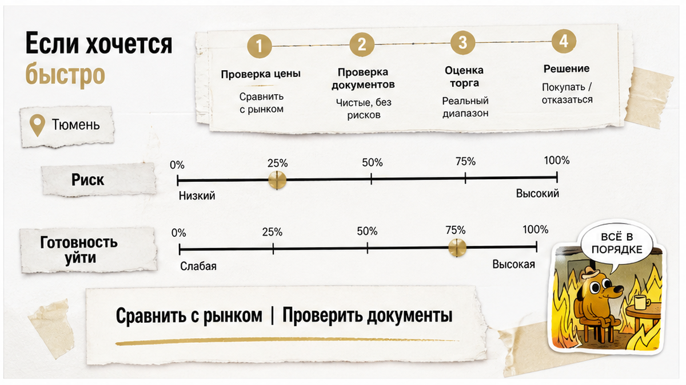

— Два миллиона. Понимаешь? Два миллиона скидка.
Клиент говорил это почти шёпотом. Так говорят, когда уже мысленно всё подписали и боятся спугнуть удачу. А я в этот момент смотрел не на цену. Я смотрел на одну строчку в документах — и понимал, что скидка тут не подарок. Скидка тут — тариф. Плата за то, что риск заберёт себе покупатель.
За двенадцать лет я привык: чем красивее цифра дисконта, тем внимательнее надо читать бумаги. Не потому, что все продавцы жулики. А потому что рынок — штука честная в одном: он не отдаёт хорошее дешевле хорошего. Если объект стоит на два миллиона ниже соседних, у этого всегда есть причина. Вопрос только один — эта причина в квартире или в человеке, который её продаёт.

Давайте по-взрослому. Продавец не идиот. Он видит те же объявления, что и вы. Он знает, сколько стоит его дом, его этаж, его метраж.
Когда он сбрасывает два миллиона, он не «уступает по доброте». Он покупает у вас скорость. Или тишину. Или отсутствие вопросов.
И вот тут развилка. Иногда он покупает скорость деньгами — и это нормальная сделка, просто быстрая. А иногда он покупает вашу невнимательность. И тогда через год приходит человек с иском, и вы объясняете суду, что вообще-то заплатили.
Скидка не бывает «просто так». Она бывает объяснимая и необъяснимая. Всё моё ремесло сводится к тому, чтобы понять, какая перед нами.

Квартира — трёшка, нормальный район Тюмени, окна во двор, свежий косметический ремонт. Собственник один, взрослый мужчина, приветливый. Торопит мягко, без давления: «ребята, я просто уезжаю, мне нужно закрыть вопрос до конца месяца».
Мы садимся смотреть документы. И там ровно то, чего я боялся: собственник в процессе банкротства. Не «был когда-то», а прямо сейчас, с долгами, с кредиторами, которым он должен сильно больше, чем стоит эта квартира.
Дальше арифметика простая, и она не в пользу покупателя. Сделки должника можно оспорить — за период до трёх лет. Если продано ниже рынка, это первый флажок для кредиторов: имущество вывели, чтобы им не досталось. И оспаривают в первую очередь именно такое — дешёвое, быстрое, «по-родственному».
То есть скидка в два миллиона была не бонусом. Она была доказательством. Тем самым аргументом, который потом в суде используют против покупателя.
Я сказал клиенту одну фразу: «Ты сейчас платишь не за квартиру. Ты платишь за право два года ходить по судам».
Мы вышли. Он молчал до машины, потом выдохнул: «А риэлтор продавца ведь ни слова не сказал». Не сказал. Ему и не надо было — он продавал свою работу, а не мою осторожность.

Я не хочу, чтобы после этой статьи вы шарахались от любой хорошей цены. Живых причин полно, и они скучные:
Всё это честные скидки. Они видны глазом, объясняются одной фразой и не боятся проверки. Хороший признак: продавец сам рассказывает причину до того, как вы спросили, и не меняет её от встречи к встрече.

А теперь список, из-за которого я не сплю перед сделками. Здесь скидка есть, а спокойствия нет:
Заметьте: почти каждый пункт этого списка продавец может честно назвать словом «скидка». И формально не соврать.

Я не устраиваю допросов. Я задаю четыре вопроса и слушаю не столько ответ, сколько паузу перед ним.
Первый: почему такая цена? Живой человек отвечает за десять секунд и одинаково в любой день. Придуманная причина начинает обрастать деталями. Второй: как долго квартира в продаже и сколько раз падала цена? Если она висит месяцами и дешевеет ступеньками — её уже смотрели юристы. И почему-то ушли. Третий: кто и когда её купил, за сколько, откуда деньги? История собственности рассказывает больше, чем сам продавец. Три перепродажи за два года — не «повезло с ценой», а прикрытый след. Четвёртый: вы готовы к полной сумме в договоре и к нормальным срокам? Вот это лакмус. Если человеку нечего скрывать, он согласится не глядя. Если начинается «зачем нам налоги», ответ вы уже получили.
Задаток — точка, после которой вы уже эмоционально «купили». Поэтому вся работа делается до него.
Смотрю собственника — суды, исполнительные производства, банкротные дела. Смотрю саму квартиру — историю переходов права, обременения, кто был прописан и куда выписался. Смотрю основание, по которому продавец её получил: наследство, дарение, приватизация или обычная покупка. Смотрю семейную ситуацию: брак, дети, материнский капитал в оплате.
И только потом — планировку, окна, соседей. Потому что кухню можно переделать, а отменённую сделку нельзя.
Отдельно про деньги: никаких «расписок на разницу», никакой оплаты до регистрации, никаких переводов третьим лицам, потому что «у него счёт арестован». Как это выглядит, когда расчёт срывается, я разбирал в кейсе про расписку без денег на счёте. Как только вас просят сделать красиво в обход — сделку надо не улучшать, а закрывать.

Понимаю. Дешёвая квартира жжёт руки: «уйдёт же». Пусть уходит.
За двенадцать лет ни один клиент не сказал мне: «жалею, что не рискнул». Зато людей, которые сэкономили на проверке и потом полтора года судились, я видел достаточно. Их скидка в два миллиона превратилась в адвоката, экспертизу, потерянное время и седину.
Хорошая новость: нормальных объектов в Тюмени много. Не сенсационных — нормальных. С понятной ценой, понятным продавцом и понятной причиной торга. И торг там тоже есть, просто он честный: сто, двести, триста тысяч, а не «минус два миллиона за ваши нервы».
Если вам сейчас предлагают скидку, от которой сладко в животе, — не спорьте с продавцом и не спорьте с собой. Просто дайте посмотреть документы человеку, которому не платят за то, чтобы вы подписали.
Позвоните: +7 922 001-65-05. Или напишите в Telegram, в MAX по номеру +7 922 001 65 05 — скиньте ссылку на объявление и адрес. Скажу прямо: скидка живая или это цена риска, который хотят переложить на вас.
Иногда самая выгодная сделка — та, в которую вы не вошли.